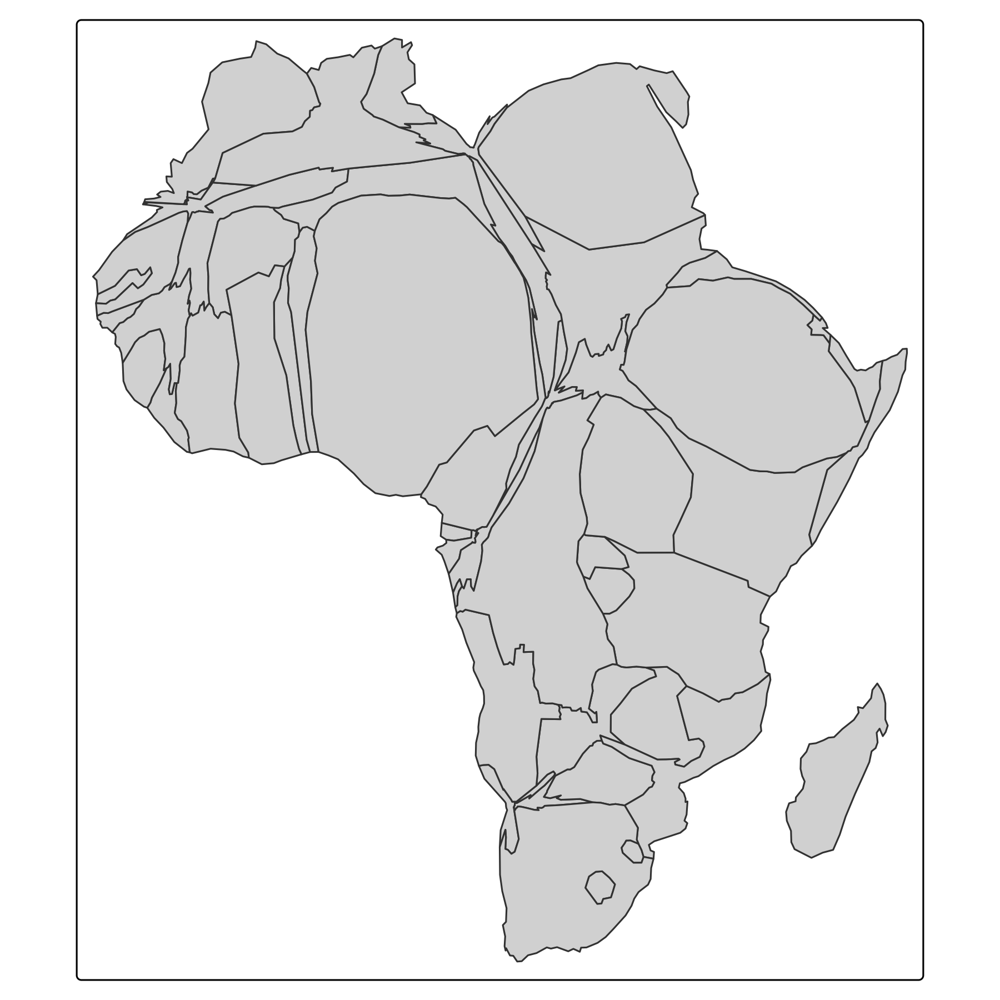
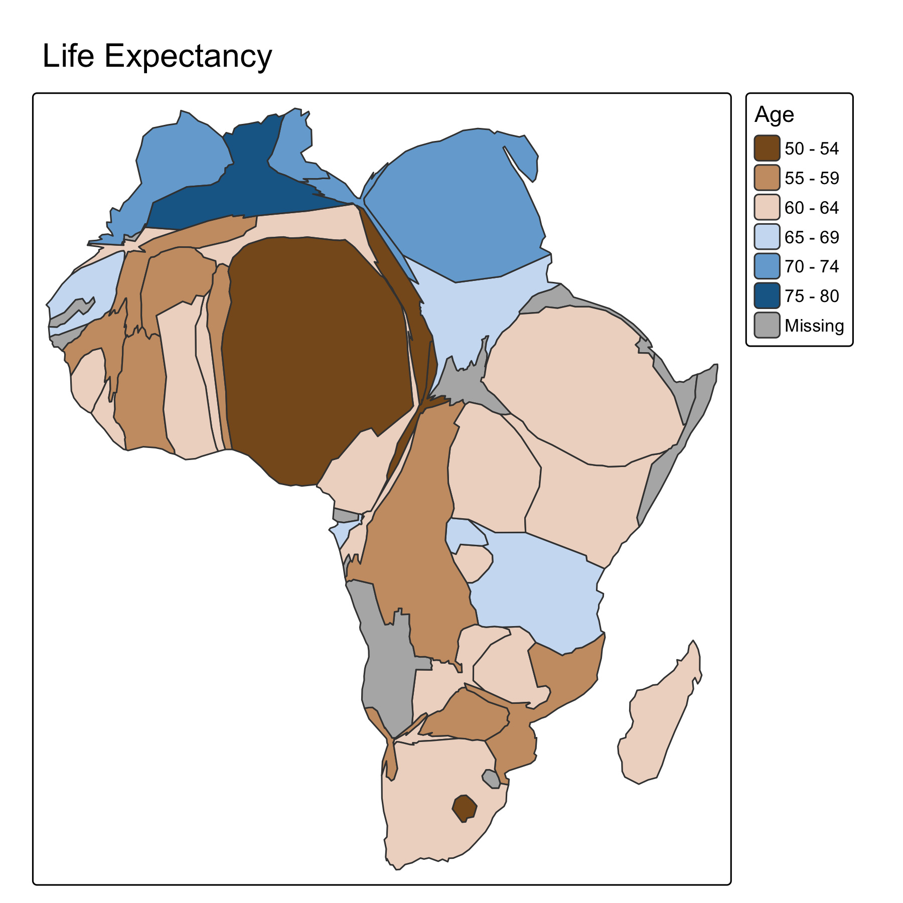
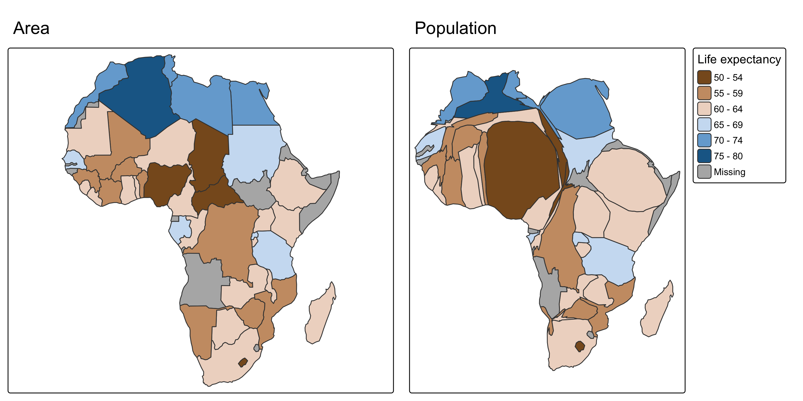
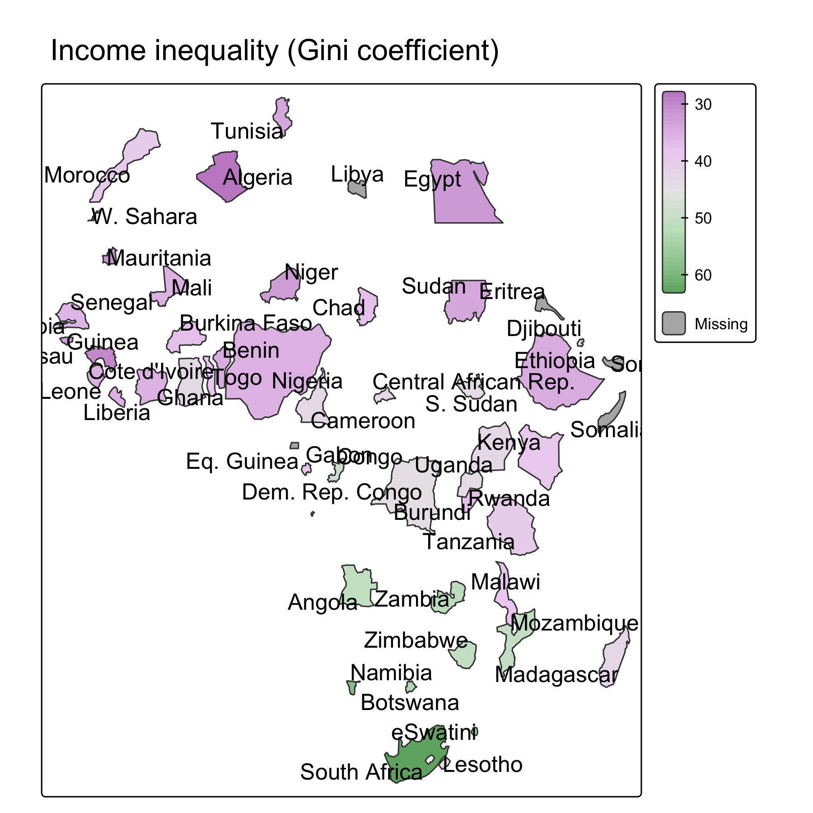
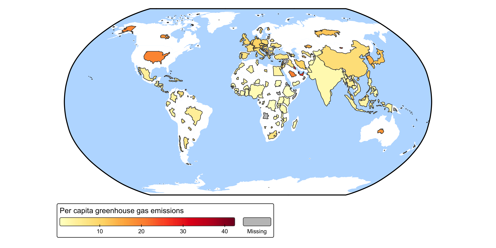
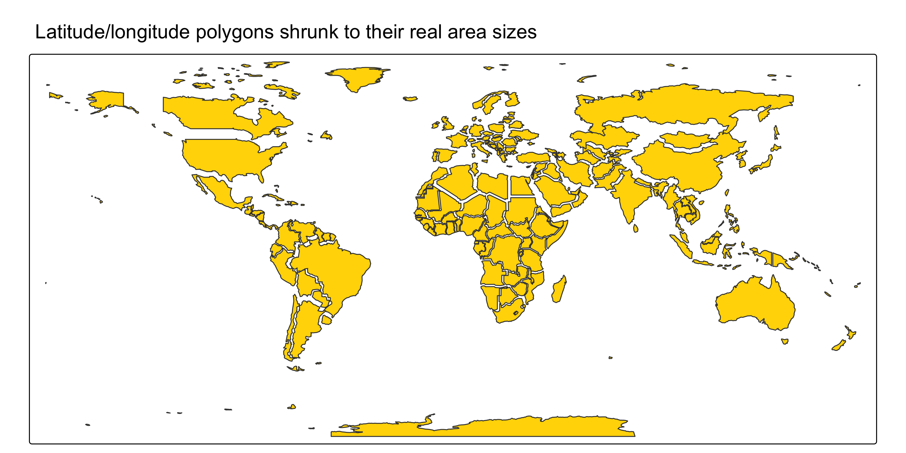
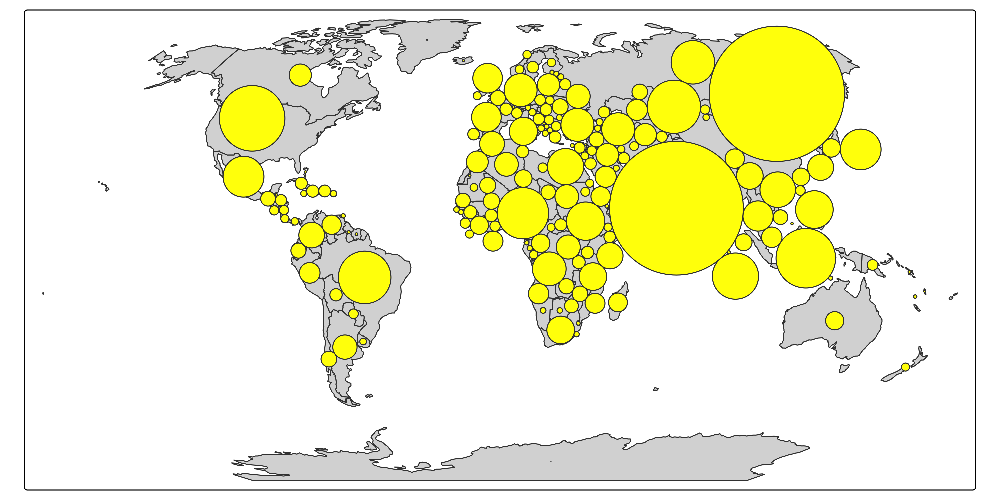
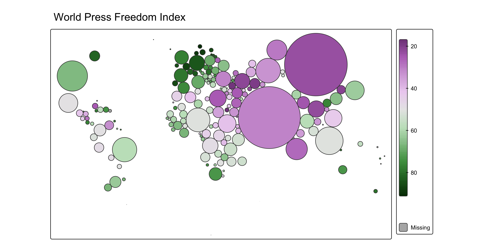
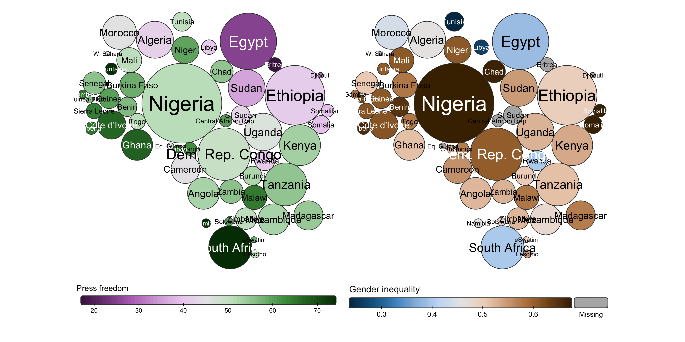
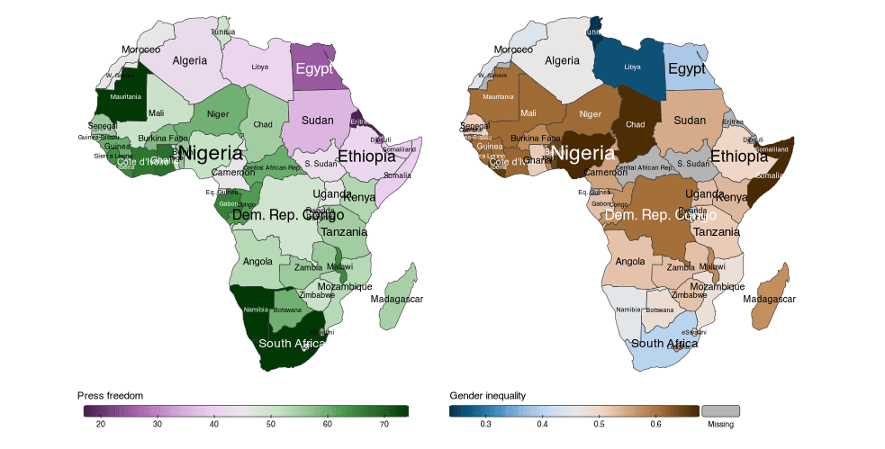

library(tmap.cartogram)Advanced Static Cartography in R
Session 8: Cartograms
Martijn Tennekes
Cartograms
What is a cartogram?
In a cartogram, areal regions are distorted such that their areas are proportional to a quantitative variable (e.g. population).
Three types:
- Contiguous: shapes are distorted, neighbourhood relationships are preserved as much as possible
- Non-contiguous: polygons are only resized; they keep their shape
- Dorling: polygons are replaced by non-overlapping bubbles (which may be relocated)
Cartograms in the grammar
Recall from the LGoTM (session 1): each layer has a transformation function.
- A cartogram is a data-driven transformation: a data variable (
size) is used to distort the geometry - The resulting polygons are then drawn like normal polygons:
fill,col,lwd, … are available - Implemented in the extension package tmap.cartogram, which uses the cartogram package under the hood
Cartogram layers
| Layer | Cartogram type | Options |
|---|---|---|
tm_cartogram() |
contiguous | opt_tm_cartogram(itermax = 15) |
tm_cartogram_ncont() |
non-contiguous | opt_tm_cartogram_ncont(expansion = 1) |
tm_cartogram_dorling() |
Dorling | opt_tm_cartogram_dorling(share = 5, itermax = 1000) |
Map projection
- Use a projected CRS that is (approximately) equal-area: the transformation assumes that polygon areas are proportional to the real areas (not the case for plain lat/lon or Mercator)
- The CRS must be set in
tm_shape(), not intm_crs(): the transformation should be applied in the correct CRS;tm_crs()is for plotting only - Not sure which CRS?
crs = "auto"
Contiguous cartograms
Contiguous cartogram
Contiguous cartogram

Adding a fill color
Adding a fill color

Original vs. cartogram
tm_orig = tm_shape(Africa, crs = "+proj=robin") +
tm_polygons(fill = "life_exp",
fill.scale = tm_scale_intervals(values = "-cols4all.bu_br_div"),
fill.legend = tm_legend_hide()) +
tm_title("Area")
tm_carto = tm_shape(Africa, crs = "+proj=robin") +
tm_cartogram(size = "pop_est", fill = "life_exp",
fill.scale = tm_scale_intervals(values = "-cols4all.bu_br_div"),
fill.legend = tm_legend("Life expectancy")) +
tm_title("Population")
tmap_arrange(tm_orig, tm_carto, ncol = 2)Original vs. cartogram

Iterations
- The contiguous cartogram algorithm is iterative
- More iterations (
itermax): areas closer to the target, but shapes more distorted and longer computation - Fewer iterations: shapes more recognizable, areas less accurate
Non-contiguous cartograms
Non-contiguous cartogram
tm_shape(Africa, crs = "+proj=robin") +
tm_cartogram_ncont(
size = "pop_est",
fill = "inequality",
fill.scale = tm_scale_continuous(values = "cols4all.pu_gn_div", values.range = c(0, 0.5)),
fill.legend = tm_legend(""),
options = opt_tm_cartogram_ncont()) +
tm_text("name", options = opt_tm_text(point.label = TRUE)) +
tm_title("Income inequality (Gini coefficient)")Non-contiguous cartogram

World: original shapes as background
tm_shape(World, crs = "+proj=robin") +
tm_polygons(fill = "white", col = NULL) +
tm_cartogram_ncont(
size = "pop_est",
fill = "footprint",
fill.legend = tm_legend("Per capita greenhouse gas emissions",
orientation = "landscape", bg.color = "white"),
fill.scale = tm_scale_continuous(values = "brewer.yl_or_rd",
values.range = c(0, 1))) +
tm_layout(earth_boundary = TRUE,
frame = FALSE,
earth_boundary.lwd = 2,
bg.color = "#bbddff",
space.color = "white")World: original shapes as background

Non-contiguous cartograms: properties
- Shapes are preserved: regions are easy to recognize
- Empty space appears between regions — which can be used to show the original outlines
expansion: expansion factor for the polygon sizes (argumentkofcartogram::cartogram_ncont())- A non-contiguous cartogram with
size= real area is useful to show the distortion of a map projection:
Non-contiguous cartograms: properties

Dorling cartograms
Dorling cartogram
Dorling cartogram

Dorling cartogram with fill
Dorling cartogram with fill

Dorling vs. bubble map
- In a bubble map (
tm_bubbles()), bubbles are placed at the centroids and may overlap - In a Dorling cartogram, bubbles do not overlap; to achieve this, they are relocated
shareinopt_tm_cartogram_dorling(): share of the bounding box filled with the largest circle (argumentkofcartogram::cartogram_dorling()) — larger values give larger bubbles, but more displacement
Example: Africa
Two variables, Dorling bubbles, labels
Diverging palettes are bright in the middle and dark at both ends: labels over middle-range values are black, labels over extreme values white. The precomputed colors are passed on with tm_scale_asis().
The map
tm_shape(Africa, crs = "auto") +
tm_cartogram_dorling(
size = "pop_est",
fill = c("press", "gender"),
fill.scale = list(
tm_scale_continuous(values = "pu_gn_div"),
tm_scale_continuous(values = "bu_br_div")),
fill.legend = list(
tm_legend("Press freedom", orientation = "landscape", frame = FALSE),
tm_legend("Gender inequality", orientation = "landscape", frame = FALSE)),
options = opt_tm_cartogram_dorling(share = 10)) +
tm_labels(
text = "name",
col = c("font_col_press", "font_col_gender"),
col.scale = tm_scale_asis(),
size = "pop_est",
size.legend = tm_legend_hide(),
size.scale = tm_scale_continuous(values.scale = 2, values.range = c(0.3, 1)),
options = opt_tm_labels(just = "center", remove_overlap = FALSE,
point.label = FALSE)) +
tm_layout(panel.show = FALSE, frame = FALSE)The map

What happens here?
- One group, two layers:
tm_cartogram_dorling()andtm_labels() - Two data variables for
fill→ two facets; two data variables forcolin the label layer → also two facets- All map variables that create facets must produce the same number of facets
- One scale and one legend per facet: lists in
fill.scaleandfill.legend - Label size is scaled by population, to match the bubbles
Animation
A leading asterisk in size = "*pop_est" triggers a transition animation from the original polygons to the cartogram:
tm_animate_fast(): defaults tuned for transition animations;play = "pingpong"plays forward and then in reverse- Shown in the viewer, or inline in R Markdown / Quarto; export with
tmap_animation()
Animation result

When (not) to use cartograms
✅ Good for:
- showing variables where people (or another total) matter more than land area
- correcting the visual dominance of large, sparsely populated regions
🚫 Watch out:
- unfamiliar shapes: readers need to recognize the regions → labels, well-known areas, or a reference map
- contiguous cartograms can become very distorted
- the size variable should be a total (count), not a rate
Recap
- tmap.cartogram:
tm_cartogram(),tm_cartogram_ncont(),tm_cartogram_dorling() sizedrives the transformation;filletc. work as for polygons- Set an (approximately) equal-area CRS in
tm_shape() options = opt_tm_cartogram*()for algorithm settings (itermax,expansion,share)size = "*var"+tm_animate_fast()animates the transformation- Further reading: cartogram vignette | tmap.cartogram | animations